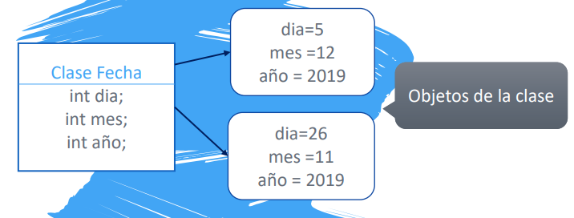
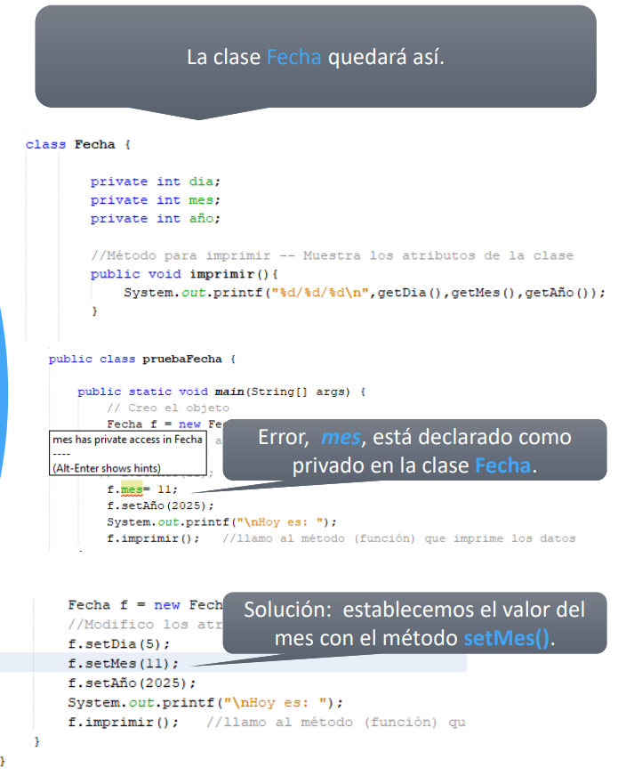
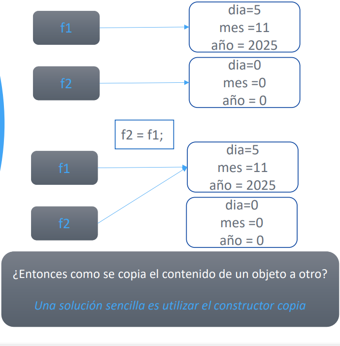
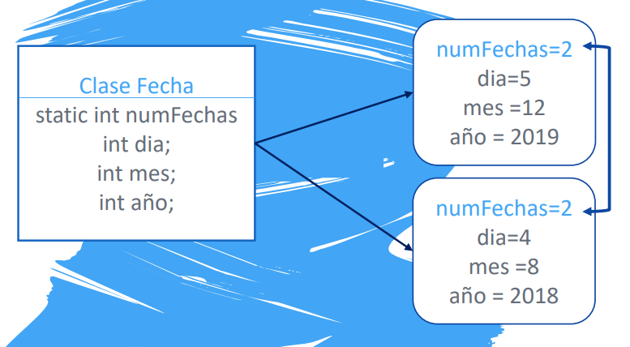

UD6 - POO: Objetos y Clases
6.1. Clases y objetos
6.1.1 ¿Qué es una clase?
Una clase es una plantilla que define un tipo de dato mediante:
- Atributos — variables que representan el estado interno del objeto
- Métodos — funciones que acceden y/o modifican esos atributos
class MiClase {
// atributos
int atributo1;
String atributo2;
// métodos
void miMetodo() { ... }
}
Ejemplo: clase Fecha con tres atributos enteros:
class Fecha {
int dia;
int mes;
int año;
}
6.1.2 ¿Qué es un objeto?
Un objeto es una instancia de una clase: asigna valores concretos a los atributos definidos por la plantilla.

Clase Fecha Objeto f1 Objeto f2
───────────── ───────────── ─────────────
int dia; → dia = 5 dia = 26
int mes; → mes = 12 mes = 11
int año; → año = 2019 año = 2019
Fecha f = new Fecha(); // creación del objeto
// o en dos líneas:
Fecha f;
f = new Fecha();
// Acceso y modificación de atributos
f.dia = 5;
f.mes = 12;
f.año = 2019;
System.out.println(f.dia + "/" + f.mes + "/" + f.año);
6.2. Métodos de una clase
Los métodos se declaran dentro del cuerpo de la clase:
public class Fecha {
public int dia;
public int mes;
public int año;
public void imprimir() {
System.out.printf("%d/%d/%d", dia, mes, año);
}
}
Fecha f = new Fecha();
f.dia = 5; f.mes = 12; f.año = 2019;
f.imprimir(); // 5/12/2019
6.3. Getters y Setters
En general, no conviene que el usuario acceda directamente a los atributos de una clase. Para ello se crean:
- Getters — métodos de acceso que devuelven el valor de un atributo
- Setters — métodos de modificación que actualizan el valor de un atributo
public class Fecha {
public int dia;
public int mes;
public int año;
// Getters
public int getDia() { return dia; }
public int getMes() { return mes; }
public int getAño() { return año; }
// Setters
public void setDia(int nuevoDia) { dia = nuevoDia; }
public void setMes(int nuevoMes) { mes = nuevoMes; }
public void setAño(int nuevoAño) { año = nuevoAño; }
}
6.4. Modificadores de acceso
Los modificadores de acceso controlan desde dónde se puede acceder a un atributo o método:
| Modificador | Misma clase | Mismo paquete | Subclase | Cualquier clase |
|---|---|---|---|---|
public |
✅ | ✅ | ✅ | ✅ |
protected |
✅ | ✅ | ✅ | ❌ |
private |
✅ | ❌ | ❌ | ❌ |
Buena práctica: atributos private
Los atributos deben declararse siempre como private. Así se impide el acceso directo desde fuera de la clase y se obliga a usar los getters y setters.

public class Fecha {
private int dia; // ← privado
private int mes;
private int año;
// acceso obligatorio a través de getters/setters
public int getDia() { return dia; }
public void setDia(int nuevoDia) { dia = nuevoDia; }
public int getMes() { return mes; }
public void setMes(int nuevoMes) { mes = nuevoMes; }
// ...
}
Fecha f = new Fecha();
f.mes = 11; // ❌ ERROR: mes es private
f.setMes(11); // ✅ correcto
6.5. Constructores
Un constructor es un método especial que se ejecuta al crear un objeto con new. Sirve para inicializar los atributos.
Características:
- Se llama igual que la clase
- No tiene tipo de retorno (ni siquiera void)
public class Fecha {
private int dia;
private int mes;
private int año;
// Constructor
public Fecha(int nuevoDia, int nuevoMes, int nuevoAño) {
dia = nuevoDia;
mes = nuevoMes;
año = nuevoAño;
}
}
Fecha f = new Fecha(5, 12, 2019); // se inicializa al crear
Constructor por defecto
Si no defines ningún constructor, Java añade automáticamente uno sin parámetros que inicializa los atributos a sus valores por defecto (0, null, false...).
En cuanto defines cualquier constructor, el constructor por defecto desaparece. Si sigues necesitando new Fecha() sin parámetros, debes declararlo explícitamente.
6.6. La palabra clave this
this hace referencia al objeto actual. Su uso más habitual es en constructores, para distinguir entre los atributos de la clase y los parámetros cuando tienen el mismo nombre:
public class Vehiculo {
private int pasajeros;
private int combustible;
private int km;
public Vehiculo(int pasajeros, int combustible, int km) {
this.pasajeros = pasajeros; // this.x → atributo; x → parámetro
this.combustible = combustible;
this.km = km;
}
}
6.7. Igualdad de objetos y constructor copia
6.7.1 El problema con ==
Las variables de tipo objeto almacenan referencias (direcciones de memoria), no los valores directamente. Cuando haces f2 = f1, ambas variables apuntan al mismo objeto:

Fecha f1 = new Fecha(5, 11, 2025);
Fecha f2 = new Fecha();
f2 = f1; // f2 apunta al mismo objeto que f1
f2.setDia(6);
System.out.println(f1.getDia()); // 6 ← ¡f1 también ha cambiado!
Nunca uses == para comparar objetos
f1 == f2 solo es true si ambas variables apuntan exactamente al mismo objeto en memoria, no si tienen los mismos valores.
6.7.2 Constructor copia
Para copiar el contenido de un objeto en otro, se usa un constructor copia: recibe un objeto de la misma clase y copia sus valores atributo a atributo.
public class Fecha {
private int dia, mes, año;
// Constructor copia
public Fecha(Fecha f) {
this.dia = f.getDia();
this.mes = f.getMes();
this.año = f.getAño();
}
}
Fecha f1 = new Fecha(5, 11, 2025);
Fecha f2 = new Fecha(f1); // copia el contenido, no la referencia
f2.setDia(6);
System.out.println(f1.getDia()); // 5 ← f1 no cambia
System.out.println(f2.getDia()); // 6
6.8. Atributos y métodos static
Un miembro static es compartido por todos los objetos de la clase. No pertenece a ninguna instancia concreta, sino a la clase en sí.

public class Empleado {
private String nombre;
private static int contadorEmpleados = 0; // compartido por todos
public Empleado(String nombre) {
this.nombre = nombre;
contadorEmpleados++;
}
public static int getNumeroEmpleados() {
return contadorEmpleados;
}
}
Empleado e1 = new Empleado("Ana");
Empleado e2 = new Empleado("Luis");
System.out.println(Empleado.getNumeroEmpleados()); // 2
Acceso a miembros static
Los miembros estáticos se acceden a través del nombre de la clase, no de un objeto: Empleado.getNumeroEmpleados().
6.9. El método toString()
toString() es un método heredado de Object que devuelve una representación en texto del objeto. Si no lo sobreescribes, muestra algo como Persona@45bc32a2.
Sobreescribiéndolo con @Override puedes personalizar cómo se muestra el objeto:
public class Persona {
private String nombre;
private int edad;
public Persona(String nombre, int edad) {
this.nombre = nombre;
this.edad = edad;
}
@Override
public String toString() {
return "Persona{nombre='" + nombre + "', edad=" + edad + "}";
}
}
Persona p = new Persona("Paco Guirau", 88);
System.out.println(p); // Persona{nombre='Paco Guirau', edad=88}
¿Cuándo usar toString()?
Muy útil para depuración. Cuando haces System.out.println(objeto), Java llama automáticamente a toString().
6.10. Paquetes (package)
Un paquete es una agrupación de clases con temática o funcionalidad similar. Sirven para organizar el código y evitar conflictos de nombres.
Una clase puede acceder a todas las clases públicas de su mismo paquete sin necesidad de indicar el nombre del paquete. Para acceder a clases de otro paquete hay dos opciones:
// Opción 1: indicar el nombre completo del paquete
java.util.Random rand = new java.util.Random();
// Opción 2: usar import (más habitual)
import java.util.Random;
Random rand = new Random();
Resumen de la unidad
| Concepto | Clave |
|---|---|
| Clase | Plantilla con atributos y métodos |
| Objeto | Instancia concreta de una clase |
| Atributo | Variable que define el estado del objeto |
| Método | Función dentro de una clase |
private |
Atributo/método solo accesible desde la propia clase |
public |
Accesible desde cualquier clase |
| Getter | Método que devuelve el valor de un atributo |
| Setter | Método que modifica el valor de un atributo |
| Constructor | Método de inicialización; mismo nombre que la clase, sin return |
this |
Referencia al objeto actual |
| Constructor copia | Copia los valores de otro objeto del mismo tipo |
static |
Miembro compartido por todos los objetos de la clase |
toString() |
Representación en texto del objeto |
package |
Agrupación de clases relacionadas |